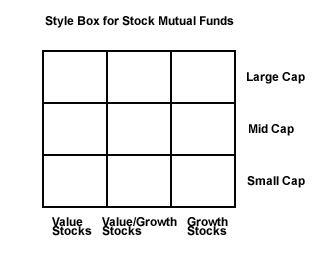
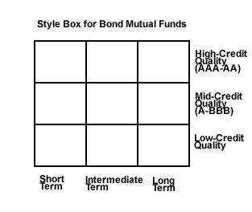
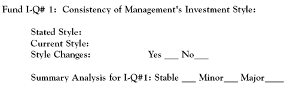

"Mutual funds aren't horses. You don't pick them by name, color or the celebrity who is involved in the ownership group." - Chuck Jaffe, MarketWatch.com, February 27, 2006
Here, we evaluate a mutual fund's investment objective, also referred to as its style, as an indicator of investment quality. In general, analysts look favorably on fund investment managers who maintain a consistent investing style. However, this view, depending on other fund investment qualities, is subject to some flexibility.
After an overview of fund categorization, as determined by investment objective, we will discuss the use of a mutual fund style box. In addition, various aspects of a fund's investing objective and the role these play in determining a fund's investment quality will be analyzed.
Using the fund reports from Morningstar and Value Line, we will identify and pinpoint where to find the relevant fund objective data from these sources. The input of this evaluative information into the Fund I-Q Scorecard is then explained. (For related reading, see Understanding The Style Box.)
We cannot predict which way the markets will move next or which investments will go up or down. However, we can spread our money around in a reasonable mix of mutual funds with a variety of risk and return characteristics that define their investment objectives. Fund categorization helps us do just that.
All mutual funds are established to be managed within the framework of a defined investment style. You can't always tell by the name of the fund which style that is, but they all have one. Figure 1, below, provides a list of commonly used investment objectives for mutual funds and their principal investment characteristics.
Size Categories for Stock Funds
Generally, portfolio managers divide up their investment objectives into nine different approaches, which are categorized by three company sizes and three investing styles. In the case of the former, size is determined by a company's market capitalization, commonly referred to as market cap. One would think that sales, assets or the number of employees would be more logical measurements of company size. Not so in the investment business, where market capitalization is the measure of choice.
| Fund Objective or Style | Investment Considerations |
| Aggressive Growth Stock | High risk-return. High price volatility and very high market valuations. No dividends. |
| Growth Stock | Above average risk and price volatility. Fast-paced price appreciation. Above market valuations. Low or no dividends. |
| Equity Income Stock | Moderate growth and modest dividends. Average market valuations. |
| Value Stock | Average to below average risk. Reliable, dividend-paying companies with relatively low valuations. Modest price appreciation. |
| Blend | A mix of growth and value stocks. |
| Sector or Specialty Stock | Narrow focus on an industry sector. |
| Stock and Bond Index | Broad market or market segments. Passive management. |
| International/Foreign Stock | Foreign companies and world, regional and country markets. |
| Ultra-Short Term Bond | Very short maturities. High credit quality. |
| Short, Intermediate and Long Term Bonds | Government, corporate and foreign issues. Maturities from one to 30 years. Yields vary accordingly. Duration and credit quality matter. |
| Municipal Bonds | Long, intermediate, and short-term maturities. Tax-exempt. Generally of high credit quality. |
| High-Yield Corporate Bond | High risk-return ("junk bonds"). |
| Hybrid | A blend of stocks and bonds. Includes balanced, targeted and life-cycle type funds. |
| Money Market Fund | For liquidity and safety. Cash and cash equivalent securities. Low risk-return. |
| Figure 1 |
A company's market cap is computed by multiplying the number of shares outstanding by its stock price. There are no exact definitions of market caps, but this is generally the rule of thumb:
Of course, on the other side of the coin from risk is return. Here, the general perception is that small companies grow faster, are more agile and, therefore, are capable of producing out-sized investment returns. Large companies are viewed as less spectacular, but steady performers.
Style Categories for Stock Funds
There are three broad mutual fund equity investment styles: value, growth and blend (a mix of value and growth strategies). Each objective performs somewhat differently and has its own risk-return characteristics. Specialty or sector funds, such as healthcare or real estate, fall into categories of their own because of their special, industry-specific investment characteristics.
Types of Bond Funds
Bonds are issued by the U.S. and foreign governments, U.S. government agencies, municipal jurisdictions and corporations. Like the stock funds, investment analysts use nine broad styles to categorize bonds, which reflect three maturity periods (short, intermediate and long term) and three levels of credit quality (high, medium and low). (For more insight, see Evaluating Bond Funds: Keeping It Simple.)
In terms of a bond fund's risk, the longer the maturities and the lower the credit quality, the greater the risk and return. Conversely, short- to intermediate-term maturities and medium- to high-credit quality produce more moderate bond returns, but with a higher level of safety.
In summary, mutual funds with different investment objectives provide a variety of investment risk and return opportunities to the investor. Therefore, it is important for fund investors to thoroughly understand and identify the investing style employed by the funds that they choose to use to build their portfolios.
Return to the Main Menu.
Several years ago, Morningstar's Don Phillips invented the so-called "style box," which is now widely used as a reference tool for determining the investment objective, or style, followed by a fund's investment managers. The details of these broad category investing strategies were covered in the previous section.
In summary, an equity style box is divided up into nine, equal-sized boxes in tic-tac-toe fashion. In the nine categories used to classify a fund's investment style, this graphic presentation shows where a stock fund's risk-return characteristics place it compared to other funds. The vertical axis classifies risk by three company sizes and the horizontal axis has three investment strategies. In similar fashion, a bond style box reflects a bond mutual fund's risk-return characteristics by using credit quality (vertical axis) and maturity periods (horizontal axis) to indicate a bond fund's investment style.
Mutual fund reports and literature use style boxes to determine a fund's current investment objective and to track its style over extended periods of time. In the following section, we will discuss how investing styles impact a fund's investment quality.
Figures 1 and 2, below, show the style box for stock and bond mutual funds. (To learn more, read Understanding The Style Box.)
|  |
| Figure 1 |
|  |
| Figure 2 |
Return to the Main Menu.
An accurate determination of a mutual fund's investment objective is important for several reasons:
For obvious reasons, consistency in this particular area is a very positive investment quality. Changes in fund management can trigger a change in investing style and should be closely monitored. Managers chasing performance have been known to resort to using different investing strategies, which often are counterproductive and change the risk profile of the fund. (For more insight, read Focus Pocus May Not Lead To Magical Returns.)
Nevertheless, fund investors need to exercise some flexibility when making judgments of a mutual fund's investment objective stability. According to an a June 2006 article by Chuck Jaffe, Don Phillips, Morningstar's managing director, was quoted as saying:
"You need to know where the funds are deployed, but it doesn't make sense to fire a great manager - or to ignore one - for using their discipline to make money. The key is knowing what a manager does and asking questions if you see a radical and unexpected change. But if you are paying for active management, let it happen, and don't worry so much that your large-cap value fund let some winners run and is now more of a large-cap blend fund. You're paying the manager to make those decisions."
The lesson to be learned from Phillips's remarks is that while the consistency of a mutual fund investment objective is undeniably an important investment quality, circumstances can justify giving the fund manager some leeway. Certainly, a history of consistent, above-average total returns would override any questions about style drift.
Using Morningstar's style boxes, here are some examples of investment style consistency, or lack thereof, over the 2001 - 2005 period, from a selection of mid cap blend mutual funds.
TCW Galileo Value Opportunities Fund (TGVOX)
Absolute perfection. Five-year annualized total return: 10.81%.
FPA Paramount Fund (FPRAX)
Nice consistency over the past four years, but it's falling into the mid cap growth style category as opposed to the fund's stated objective as mid cap blend. That said, it's hard to argue with the fund's five-year annualized total return of 14.9%.
Selected Special Shares Fund (SLSSX)
Better late than never! It took five years to make it to Selected Special's stated investment style category. The Fund's 2005 total return was 12.7% compared to the inconsistent five-year annualized total return of its style drift years of 1.3%.
Fairholme Fund (FAIRX)
This is a good example of a fund, which, at first glance, looks like the manager is all over the board when it comes to investment style. However, because the portfolio turnover rate is in the low 20s, this doesn't look like a conventional case of style inconsistency. The style drift is undoubtedly due to the fund's typical low holding of 15 to 25 stocks. With this level of portfolio concentration, just one significant transaction could easily change its style category. The fund's five-year annualized total return is 14.8%. This shows that there can be exceptions to the rule that requires style consistency to produce top-rated performance. (For related reading on this topic, see Understanding The Style Box.)
Return to the Main Menu.
This is the entry we need to complete in the Fund Investment-Quality Scorecard for an analysis of a mutual fund's investing style:
When seeking the information needed to complete the scorecard, Morningstar's fund report shows a fund's stated style in the "Master Category" box in the upper right-hand corner of its report. Its take on a fund's current style is disclosed in the "Current Investment Style" section, which also provides a fund style box graphic, value measures and growth measures. Lastly, year-to-year style changes are clearly seen in its multi-year style box graphics at the top of the report.
Value Line's report has its version, which differs from the norm, of a style box that only provides a fund's current categorization.
Making a style drift analysis decision is an empirical exercise. There is no doubt that a consistent investment style over many years is a solid fund investment quality. However, some style drift over an extended period of time is not an unusual occurrence, and should not be viewed too harshly. A fund's investment style behavior should not be looked at in isolation. Investors should also look at turnover, management tenure and total return results. If these investment qualities are positive, some style drift is easily tolerated. In other words, fund style changes are often acceptable when when management delivers the goods. (For more insight, read Don't Panic If your Mutual Fund Is Drifting.)
Lastly, it is worth noting that not all investment qualities are created equal. Of the eight indicators used in the Fund Investment Quality Scorecard, some carry more weight than others. The analogy of a baseball team's batting can be used to illustrate this point. Those batters hitting in positions one to six ("top end") are expected to provide most of a team's runs. Not much offense is expected from those batting in positions seven to nine ("bottom end") in the order.
Similarly, among the factors on the Fund Investment Quality Scorecard, investment style consistency falls more into the bottom rather than the top of the batting order. Of course, style drift should be investigated, but as long as the investment managers produce results, it's OK to be flexible on this mutual fund factor. (See sample Morningstar and Value Line reports.)
{kind=link}
{kind=link}
{kind=link}
{kind=link}
{kind=link}
{kind=link}
{kind=link}